ใบเรียนรู้ 4.3
สมดุลต่อการเลื่อนที่
จากสิ่งที่เห็น → แผนภาพแรง → สมการ → การคำนวณ
เติมเนื้อหาใต้หัวข้อและตอบคำถามสั้น ๆ ใช้รูปที่เตรียมให้ประกอบการอธิบาย ถ้าโจทย์ให้มวล ใช้ g = 9.8 m/s² เว้นแต่ระบุค่าอื่น
1 มีแรงกระทำ แต่ความเร็วไม่เปลี่ยน
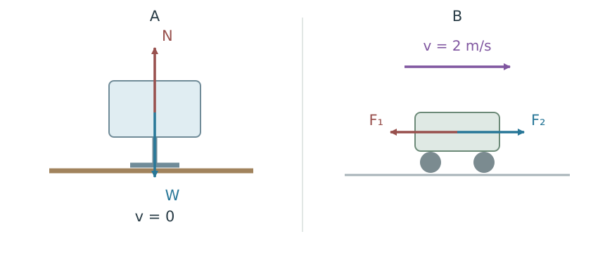
คำถาม 1
จอคอมพิวเตอร์อยู่นิ่ง แปลว่าไม่มีแรงกระทำเลยหรือไม่? ระบุแรงสองแรงในรูป A
คำถาม 2
ถ้าแรงลัพธ์แนวระดับของรถเป็นศูนย์ รถที่กำลังวิ่งจะหยุดทันทีหรือเคลื่อนที่อย่างไร?
สมดุลต่อการเลื่อนที่
\[\sum\vec F=0\quad\Rightarrow\quad\vec a=0,\quad\vec v=\text{คงตัว}\]
คำถาม 3
วัตถุจะอยู่ในสมดุลต่อการเลื่อนที่และอยู่นิ่ง ต้องมีเงื่อนไขสองข้อใด?
คำถาม 4
วัตถุที่ตกอย่างเสรี โดยไม่คิดแรงต้านอากาศ อยู่ในสมดุลต่อการเลื่อนที่หรือไม่ เพราะอะไร?
2 เลือกวัตถุ แล้วระบุแรง
แรงที่ใช้บ่อย
\(N\): แรงปฏิกิริยาตั้งฉากกับผิวสัมผัส
\(T\): แรงตึงเชือก ดึงตามแนวเชือกออกจากวัตถุ
\(f\): แรงเสียดทาน ขนานผิว ต้านการเลื่อนหรือแนวโน้มการเลื่อนสัมพัทธ์ระหว่างผิว
คำถาม 5
เมื่อวิเคราะห์ก้อนวัตถุที่ผูกเชือก เราควรใส่แรงที่ก้อนวัตถุดึงเชือกลงในแผนภาพแรงของก้อนวัตถุหรือไม่?
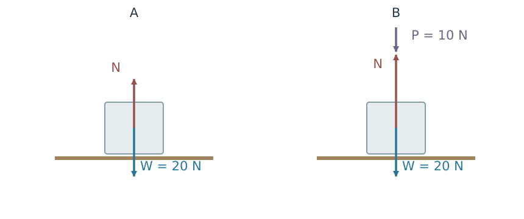
คำถาม 6
รูป A แรงจากโต๊ะมีขนาดเท่าใด?
คำถาม 7
รูป B แรงจากโต๊ะมีขนาดเท่าใด? เขียนสมการแนวดิ่งหนึ่งสมการ
คำถาม 8
มีแรง 8 N ไปทางขวา และแรง 3 N ไปทางซ้าย ต้องเพิ่มแรงที่สามเท่าใดและทิศใดให้สมดุล?
สมดุลเมื่อมีสองแรง
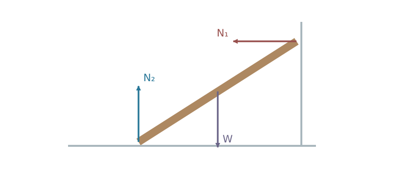
คำถาม 9
แท่งในรูปอยู่นิ่งได้หรือไม่? พิจารณาว่ามีแรงใดหักล้างแรงจากกำแพงในแนวระดับ
3 ทดลองแรงสามแรง และต่อยอดเป็นสี่แรง
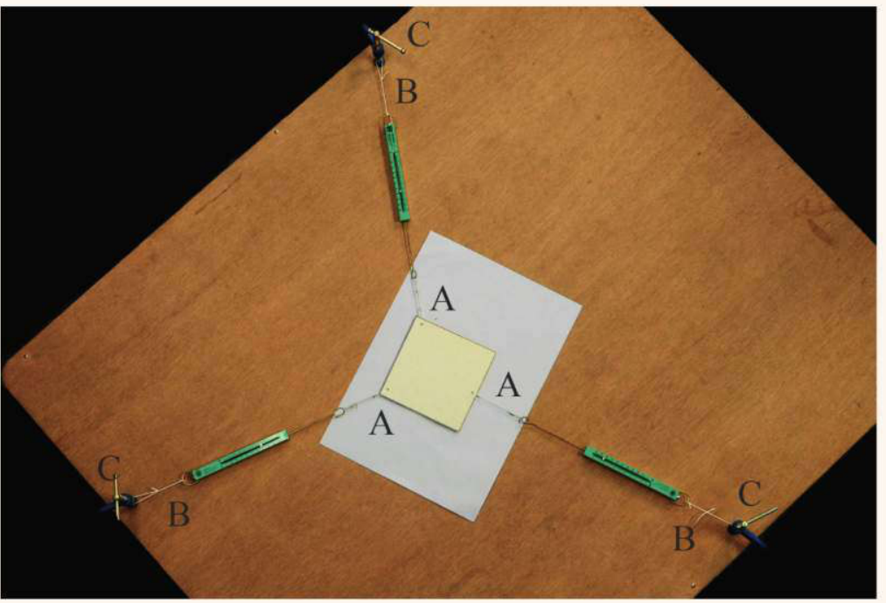
ดึงด้วยเครื่องชั่งสปริงสามอันให้แผ่นวัสดุอยู่นิ่ง บันทึกขนาดและแนวแรง จากนั้นแทนแรงด้วยลูกศรตามมาตราส่วน แล้วนำมาต่อหัวกับหาง
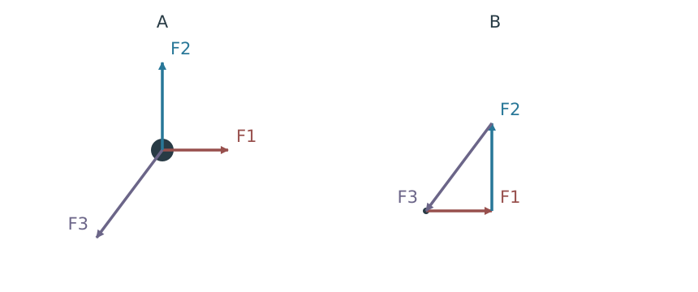
คำถาม 10
ขณะแผ่นวัสดุอยู่นิ่ง แรงลัพธ์ที่กระทำต่อแผ่นวัสดุเป็นเท่าใด?
คำถาม 11
เมื่อต่อแนวแรงทั้งสามในกรณีทดลองนี้ แนวแรงพบกันอย่างไร?
คำถาม 12
ถ้ารวมแรงสองแรงแรก แรงที่สามต้องมีขนาดและทิศอย่างไรเมื่อเทียบกับแรงลัพธ์นั้น?
คำถาม 13
ลูกศรสามแรงต่อหัวกับหางแล้วเป็นรูปปิดหรือไม่? แรงลัพธ์เป็นเท่าใด?
แรงสามแรงในสมดุล
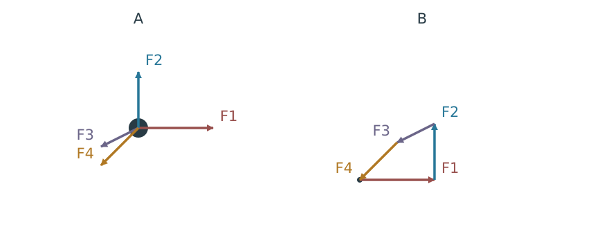
คำถาม 14
สี่แรงในรูป B ต่อเป็นรูปใด? แรงทุกแรงจำเป็นต้องเท่ากันหรือไม่?
คำถาม 15
ถ้าจับคู่ \(\vec R_{12}=\vec F_1+\vec F_2\) และ \(\vec R_{34}=\vec F_3+\vec F_4\) ผลรวมสองกลุ่มต้องสัมพันธ์กันอย่างไร?
เงื่อนไขร่วมของสมดุลต่อการเลื่อนที่
\[\sum\vec F=0\]
4 แตกแรงให้ตรงกับมุม แล้วรวมทีละแกน
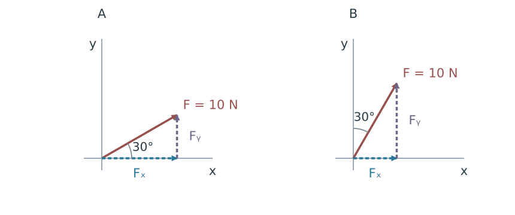
ด้านประชิดมุมกับด้านตรงข้ามมุม
มุมจากแกน \(x\): \(F_x=F\cos\theta,\ F_y=F\sin\theta\)
ใส่เครื่องหมายบวกหรือลบตามทิศขององค์ประกอบแต่ละแกน
คำถาม 16
รูป A จงหา \(F_x,F_y\)
คำถาม 17
รูป B จงหา \(F_x,F_y\)
สมดุลในสองมิติ
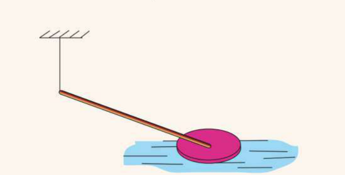
คำถาม 18
เมื่อระบบอยู่นิ่ง เชือกควรอยู่ในแนวดิ่งหรือแนวเอียง? เพราะเหตุใด? ไม่คิดแรงต้านน้ำและแรงเสียดทานแนวระดับ
5 กฎไซน์และกฎโคไซน์กับสามเหลี่ยมแรง
ใช้เป็นอีกวิธีหนึ่งเมื่อแรงสามแรงต่อกันเป็นสามเหลี่ยมปิด เริ่มจากรูปเรขาคณิต แล้วเชื่อมกลับไปยังแรง
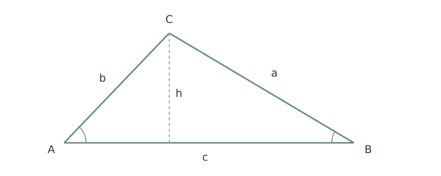
กฎไซน์
จึงได้ \(\dfrac a{\sin A}=\dfrac b{\sin B}\) และทำแบบเดียวกันกับอีกความสูง\[\boxed{\frac a{\sin A}=\frac b{\sin B}=\frac c{\sin C}}\]
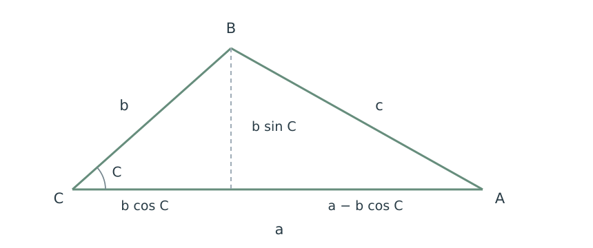
กฎโคไซน์
จากภาพแรงเป็นสามเหลี่ยม 1
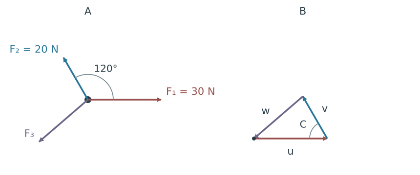
คำถาม 19
ด้าน u, v, w แทนขนาดแรงใดตามลำดับ?
คำถาม 20
มุมภายใน C ในสามเหลี่ยมมีค่าเท่าใด? เทียบกับมุม 120° ในรูปแรง
คำถาม 21
เลือกกฎที่ใช้หา \(F_3\) แล้วเขียนสมการและคำตอบ
\(F_3=10\sqrt7\approx26.5\ \mathrm{N}\)
จากภาพแรงเป็นสามเหลี่ยม 2
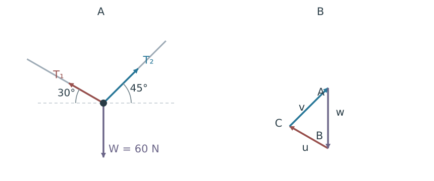
คำถาม 22
ระบุแรงสามแรงที่กระทำต่อจุดต่อ แล้วจับคู่ด้าน u, v, w
คำถาม 23
จงหามุมภายใน A, B และ C ของสามเหลี่ยมด้านขวา
คำถาม 24
เขียนกฎไซน์ให้ตรงคู่ด้าน–มุม แล้วหาแรงตึงเชือกสองเส้น
6 หาแรงที่ทำให้สมดุล
แบบฝึกหัด 4.3 ข้อ 3
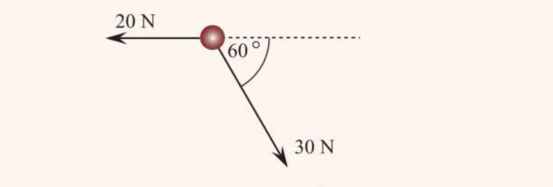
คำถาม 25
กำหนดขวาและขึ้นเป็นบวก จงหาองค์ประกอบแรงลัพธ์ของสองแรงที่ให้มา
\(R_y=-30\sin60^\circ=-15\sqrt3\ \mathrm{N}\)
คำถาม 26
แรงที่สามต้องมีขนาดและทิศใด? ระบุมุมโดยวัดจากแนวระดับไปขวา
\(F_3=\sqrt{5^2+(15\sqrt3)^2}=\sqrt{700}\approx26.5\ \mathrm{N}\)
ทำมุม \(\tan^{-1}(15\sqrt3/5)\approx79.1^\circ\) เหนือแนวระดับไปขวา
ท้ายบท 4 ปัญหาข้อ 1
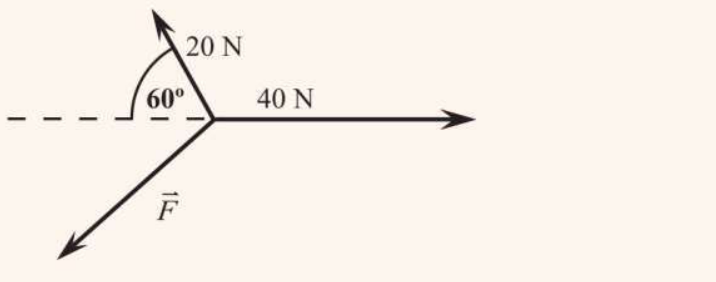
คำถาม 27
จงหาแรงที่สามให้สมดุล ทั้งขนาดและทิศทาง
แรงที่สามมีองค์ประกอบ \((-30,-10\sqrt3)\ \mathrm{N}\) จึงมีขนาด \(20\sqrt3\approx34.6\ \mathrm{N}\) ทำมุม \(30^\circ\) ต่ำกว่าแนวระดับไปซ้าย
7 เชือกเอียงเส้นเดียวและการยกวัตถุ
ตัวอย่าง 1 · เชือกเอียงกับแรงดึงแนวระดับ
วัตถุหนัก 4 N ถูกดึงแนวระดับไปขวา 3 N และอยู่นิ่ง มุม θ วัดจากแนวดิ่ง
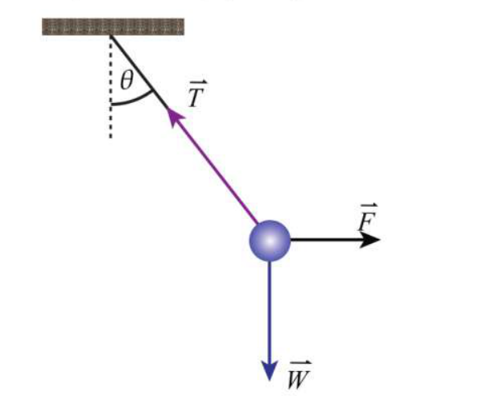
คำถาม 28
เขียนสมการสมดุลแนวระดับและแนวดิ่ง
คำถาม 29
จงหา \(T\) และ \(\theta\)
\(\tan\theta=3/4\Rightarrow\theta\approx36.9^\circ\)
คำถาม 30
จัดเหมือนตัวอย่าง 1 แต่เปลี่ยนน้ำหนักเป็น 12 N และแรงดึงแนวระดับเป็น 5 N จงหาแรงตึงเชือกและมุมจากแนวดิ่ง
แบบฝึกหัด 4.3 ข้อ 4
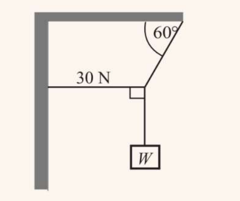
คำถาม 31
จงหาแรงตึงในเชือกเอียง
คำถาม 32
จงหาน้ำหนัก W ที่แขวน
แบบฝึกหัด 4.3 ข้อ 5
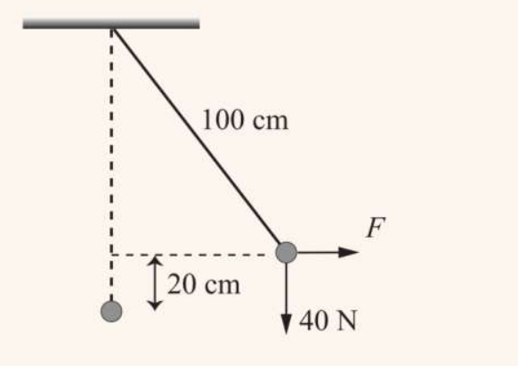
คำถาม 33
หลังยกสูงขึ้น ระยะในแนวดิ่งจากจุดแขวนถึงวัตถุ และระยะที่เยื้องในแนวระดับเป็นเท่าใด?
แนวระดับ \(\sqrt{100^2-80^2}=60\ \mathrm{cm}\)
คำถาม 34
จงหาแรงดึงแนวระดับ F และแรงตึงเชือก T
\(T(80/100)=40\Rightarrow T=50\ \mathrm{N}\)
8 เชือกสองเส้นรับน้ำหนักร่วมกัน
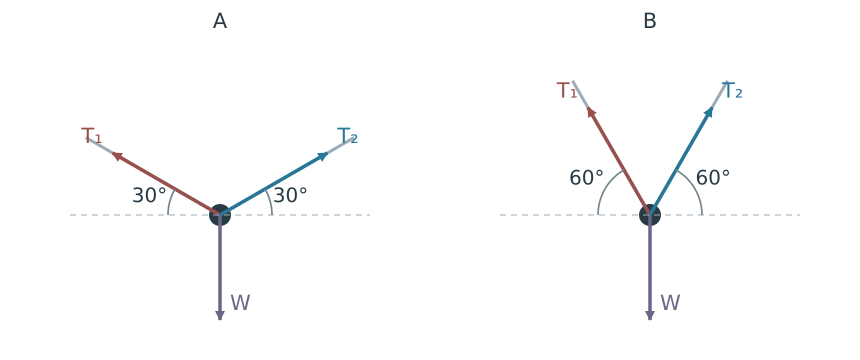
คำถาม 35
แรงตึงซ้ายและขวาเท่ากันเป็น \(T\) จงเขียนสมการแนวดิ่ง เมื่อแต่ละเชือกทำมุม \(\alpha\) กับแนวระดับ
คำถาม 36
ถ้า W = 60 N แต่ละเชือกใน A และ B มีแรงตึงเท่าใด? กรณีใดตึงกว่า?
ตัวอย่าง 2 · สัญญาณไฟจราจร
สัญญาณไฟมวล 5 kg อยู่นิ่ง เชือก AB ยาว 4 m, BC ยาว 3 m, มุม ABC เป็นมุมฉาก และ A กับ C อยู่ระดับเดียวกัน กำหนด T₁ ใน AB, T₂ ใน BC และ T₃ ในเชือกแนวดิ่ง
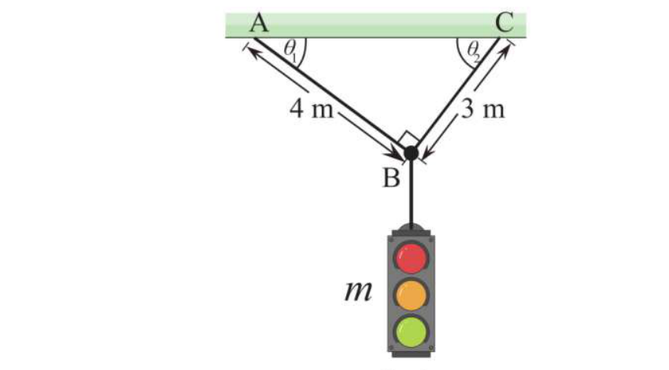
คำถาม 37
พิจารณาเฉพาะสัญญาณไฟ จงหา T₃
คำถาม 38
จากสามเหลี่ยม ABC จงหา \(AC,\sin\theta_1,\cos\theta_1,\sin\theta_2,\cos\theta_2\)
\(\sin\theta_2=4/5,\cos\theta_2=3/5\)
คำถาม 39
พิจารณาจุดต่อ B เขียนสมการสมดุลสองแกน
\(T_1(3/5)+T_2(4/5)-49=0\)
คำถาม 40
แก้สมการหา T₁ และ T₂
\(T_1=29.4\ \mathrm{N},\ T_2=39.2\ \mathrm{N}\)
คำถาม 41
วัตถุหนัก 80 N แขวนอยู่นิ่งด้วยเชือกซ้ายทำมุม 30° และเชือกขวา 60° กับแนวระดับ จงหาแรงตึงสองเส้น
\(T_L=40\ \mathrm{N},\ T_R=40\sqrt3\approx69.3\ \mathrm{N}\)
ท้ายบท 4 ปัญหาข้อ 2
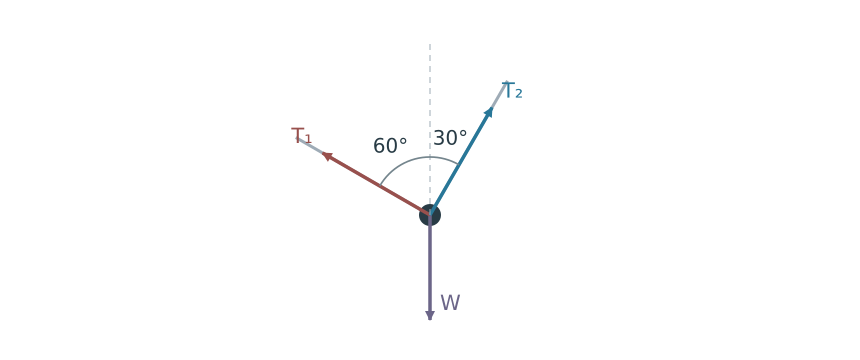
คำถาม 42
จงหา T₁ และ T₂ ในรูปของ W
\(T_1\cos60^\circ+T_2\cos30^\circ=W\)
\(T_1=W/2,\quad T_2=\sqrt3W/2\)
คำถาม 43
ทำไมเมื่อแขวนน้ำหนักตรงกลางเชือก เชือกจึงต้องหย่อนลงเล็กน้อย แทนที่จะเป็นเส้นตรงแนวระดับพอดี?
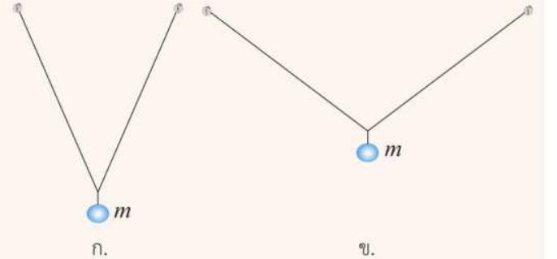
คำถาม 44
หากเพิ่มมวลที่แขวนอย่างเท่ากัน เชือกกรณี ก หรือ ข มีแนวโน้มขาดก่อน? เพราะอะไร?
9 แรงเสียดทานบนพื้นระดับ
แรงเสียดทานสถิตและจลน์
ใกล้เริ่มเลื่อน: \(f_s=f_{s,\max}=\mu_sN\)
กำลังเลื่อน: \(f_k=\mu_kN\) ต้านการเลื่อนสัมพัทธ์
หาค่า \(N\) จากสมการตั้งฉากกับผิวก่อน ไม่แทน \(N=mg\) ทุกกรณี
แบบฝึกหัด 4.3 ข้อ 1
คำถาม 45
ดึงกล่องบนพื้นระดับด้วยแรง 100 N ทำมุม 30° เหนือแนวระดับ กล่องเคลื่อนที่ด้วยความเร็วคงตัว จงหาแรงเสียดทานและทิศ
คำถาม 46
กล่องหนัก 100 N ถูกดึง 50 N ที่มุม 37° เหนือแนวระดับ และเลื่อนด้วยความเร็วคงตัว ให้ sin 37° = 0.6, cos 37° = 0.8 จงหา N
คำถาม 47
จากกรณีกล่องหนัก 100 N ข้างบน จงหาแรงเสียดทานและ μₖ
\(\mu_k=f_k/N=40/70=4/7\approx0.571\)
ท้ายบท 4 ปัญหาข้อ 5
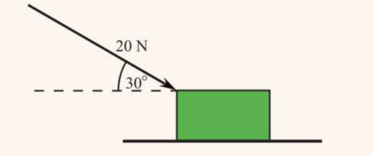
คำถาม 48
จงหาแรงที่กล่องกดพื้นในแนวตั้งฉาก มีขนาดเท่าใด?
คำถาม 49
จงหาสัมประสิทธิ์ความเสียดทานจลน์
\(\mu_k=10\sqrt3/60=\sqrt3/6\approx0.289\)
10 สมดุลบนพื้นเอียง
ตัวอย่าง 3 · ก้อนวัตถุอยู่นิ่งบนพื้นเอียง
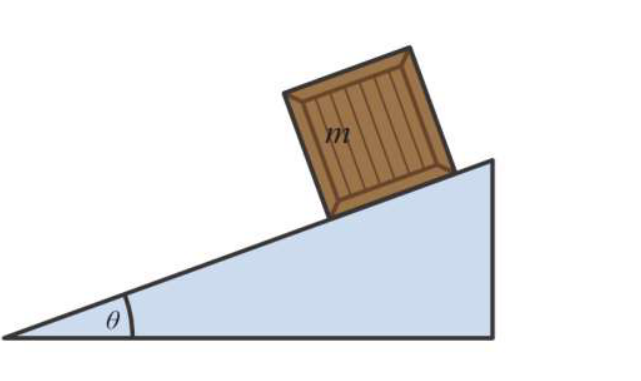
คำถาม 50
องค์ประกอบของน้ำหนักตามพื้นเอียงและตั้งฉากกับพื้นเอียงเป็นเท่าใด?
ตั้งฉากกดเข้าพื้น: \(mg\cos\theta\)
คำถาม 51
จงหาแรงเสียดทานสถิตและแรงปฏิกิริยาตั้งฉาก ในรูปของ m, g, θ
\(N-mg\cos\theta=0\Rightarrow N=mg\cos\theta\)
คำถาม 52
วัตถุอยู่นิ่งบนพื้นเอียง แปลว่าใช้ \(f_s=\mu_sN\) ได้เสมอหรือไม่?
แบบฝึกหัด 4.3 ข้อ 2
คำถาม 53
วัตถุหนัก 50 N อยู่นิ่งบนพื้นเอียง 30° จงหา N และแรงเสียดทาน พร้อมทิศ
\(f_s=50\sin30^\circ=25\ \mathrm{N}\) ขึ้นตามพื้นเอียง
คำถาม 54
วัตถุหนัก 100 N เริ่มวางนิ่งบนพื้นเอียง 30° ที่มี μₛ = 0.70 จงตรวจว่าอยู่นิ่งได้หรือไม่ และแรงเสียดทานจริงเท่าใด
ต้องใช้ \(f_s=100\sin30^\circ=50\ \mathrm{N}\)
\(f_{s,\max}=0.70(86.6)\approx60.6\ \mathrm{N}>50\ \mathrm{N}\) จึงอยู่นิ่งได้ และแรงจริงคือ 50 N ขึ้นตามพื้นเอียง
ท้ายบท 4 ปัญหาข้อ 3
คำถาม 55
วัตถุไถลลงด้วยความเร็วคงตัวบนพื้นเอียงยาว 0.60 m สูง 0.30 m จงหามุมเอียงและ μₖ
\(\mu_kN=W\sin\theta,\ N=W\cos\theta\)
\(\mu_k=\tan30^\circ=1/\sqrt3\approx0.577\)
ท้ายบท 4 ปัญหาข้อ 4
วัตถุหนัก 20 N อยู่บนพื้นเอียง 45° มี μₖ = 0.30 แรง F ขนานพื้นเอียงและชี้ขึ้นในทั้งสองกรณี
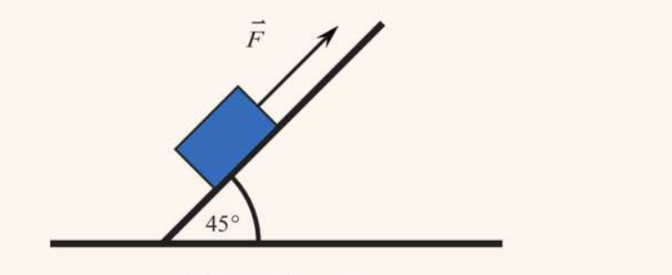
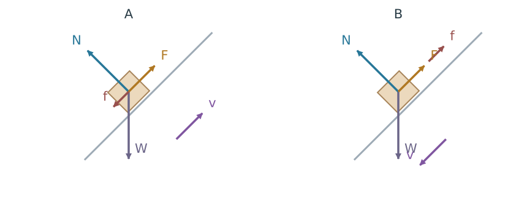
คำถาม 56
แรงเสียดทานชี้ทิศใดใน A และ B?
คำถาม 57
ก. ต้องใช้ F เท่าใดให้เลื่อนขึ้นด้วยความเร็วคงตัว?
\(F=20\sin45^\circ+0.30(20\cos45^\circ)\approx18.4\ \mathrm{N}\)
คำถาม 58
ข. ต้องใช้ F เท่าใดให้เลื่อนลงด้วยความเร็วคงตัว?
\(F=20\sin45^\circ-0.30(20\cos45^\circ)\approx9.90\ \mathrm{N}\)
ท้ายบท 4 ปัญหาท้าทายข้อ 21
คำถาม 59
ค่อย ๆ เพิ่มมุมพื้นเอียงจาก 30° จนถึง 60° ซึ่งวัตถุใกล้เริ่มไถลลงพอดี ระหว่างที่ยังอยู่นิ่ง แรงเสียดทานสถิตเพิ่มหรือลด? เปรียบเทียบค่าเริ่มและค่าสุดท้ายในรูป mg
จาก \(mg/2\) เป็น \(\sqrt3mg/2\); ค่าสุดท้ายจึงเท่ากับแรงเสียดทานสถิตสูงสุด
11 แยกวัตถุ และหาค่าที่รับได้มากที่สุด
ระบบเชือกและรอก
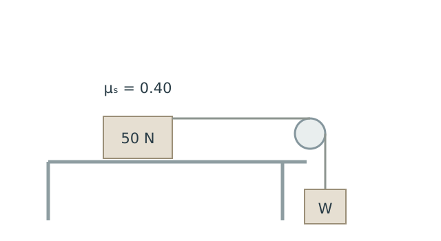
คำถาม 60
จงหาน้ำหนัก W มากที่สุดที่ยังทำให้ระบบอยู่นิ่ง
ที่ขีดจำกัด \(T=20\ \mathrm{N}\); วัตถุแขวนมี \(W=T\)
จึงได้ \(W_{\max}=20\ \mathrm{N}\)
ท้ายบท 4 ปัญหาข้อ 6
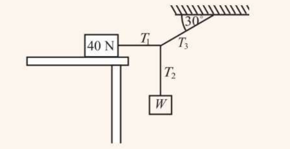
คำถาม 61
เมื่อ W มากที่สุดที่ระบบยังนิ่ง แรงตึง T₁ เป็นเท่าใด?
คำถาม 62
ใช้สมดุลของจุดต่อ จงหา W มากที่สุด และ T₃
\(W=T_2=T_3\sin30^\circ=16/\sqrt3\approx9.24\ \mathrm{N}\)
ท้ายบท 4 ปัญหาข้อ 7
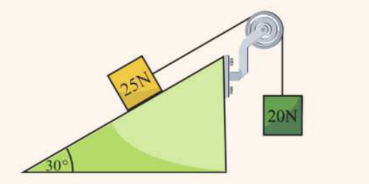
คำถาม 63
ขณะใกล้เริ่มเลื่อนขึ้น แรงเสียดทานบนก้อน 25 N ชี้ทิศใด และแรงตึงเชือกเท่าใด?
คำถาม 64
จงหาสัมประสิทธิ์ความเสียดทานสถิต
\(N=25\cos30^\circ\)
\(\mu_s=7.5/(25\cos30^\circ)\approx0.346\)
ท้ายบท 4 ปัญหาท้าทายข้อ 26
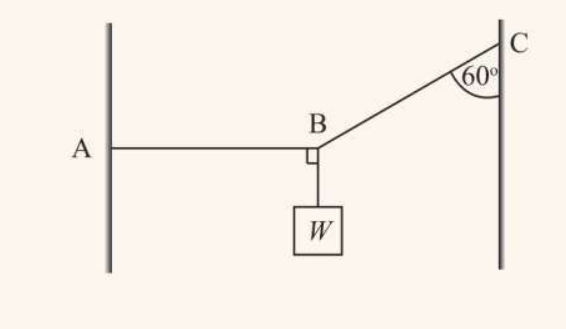
คำถาม 65
จงเขียนแรงตึง AB และ BC ในรูปของ W แล้วระบุเชือกที่จะถึงขีดจำกัดก่อน
\(T_{AB}=T_{BC}\sin60^\circ=\sqrt3W\); เชือกแนวดิ่งตึง \(W\)
ดังนั้น BC ถึงขีดจำกัดก่อน
คำถาม 66
จงหา W มากที่สุดที่เชือกทุกเส้นยังรับได้
ตรวจ: \(T_{AB}=15\sqrt3\approx26.0\ \mathrm{N}<30\), เชือกแนวดิ่งตึง 15 N
ท้ายบท 4 ปัญหาท้าทายข้อ 25 · สายซุงว่าว
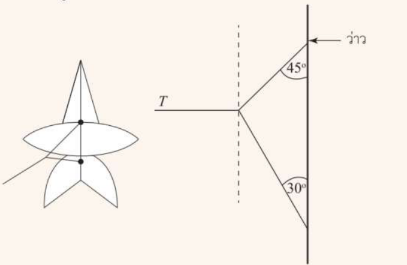
คำถาม 67
ให้ Tᵤ เป็นแรงตึงเส้นบน และ Tₗ เส้นล่าง จงหาแรงตึงทั้งสอง โดยเขียนสมการเอง
\(T_u\cos45^\circ-T_l\cos30^\circ=0\)
\(T_u\approx8.97\ \mathrm{N},\quad T_l\approx7.32\ \mathrm{N}\)
ลำดับการแก้โจทย์สมดุลต่อการเลื่อนที่
อ้างอิงเนื้อหา: สสวท. ฟิสิกส์ เล่ม 2 บทที่ 4 หัวข้อ 4.3 และโจทย์ท้ายบทที่เกี่ยวข้อง ภาพผลทดลองแบบเวกเตอร์เป็นภาพจำลองเพื่ออธิบายแนวคิด